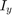
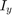
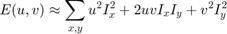

Corner Detection
In this demo we will understand concepts behind Harris Corner Detection, by learning what features are and why they are important, and how to use the function cv.cornerHarris to detect corners using the Harris-Stephens method. We also learn about another corner detector, the Shi-Tomasi Corner Detector, and how to use the function cv.goodFeaturesToTrack.
In addition, we show how to:
- Use the OpenCV function cv.cornerEigenValsAndVecs to find the eigenvalues and eigenvectors to determine if a pixel is a corner.
- Use the OpenCV function cv.cornerMinEigenVal to find the minimum eigenvalues for corner detection.
- To implement our own version of the Harris detector as well as the Shi-Tomasi detector, by using the two functions above.
Sources:
- https://docs.opencv.org/3.2.0/d9/dbc/tutorial_generic_corner_detector.html
- https://docs.opencv.org/3.2.0/d4/d7d/tutorial_harris_detector.html
- https://docs.opencv.org/3.2.0/dc/d0d/tutorial_py_features_harris.html
- https://docs.opencv.org/3.2.0/d4/d8c/tutorial_py_shi_tomasi.html
- https://github.com/opencv/opencv/blob/3.2.0/samples/cpp/tutorial_code/TrackingMotion/cornerDetector_Demo.cpp
- https://github.com/opencv/opencv/blob/3.2.0/samples/cpp/tutorial_code/TrackingMotion/cornerHarris_Demo.cpp
Contents
Theory
In computer vision, usually we need to find matching points between different frames of an environment. Why? If we know how two images relate to each other, we can use both images to extract information of them. When we say matching points we are referring, in a general sense, to characteristics in the scene that we can recognize easily. We call these characteristics features. So, what characteristics should a feature have? It must be uniquely recognizable.
To mention a few image features:
- Edges
- Corners (also known as interest points)
- Blobs (also known as regions of interest)
In this tutorial we will study the corner features, specifically.
Why is a corner so special? Because, since it is the intersection of two edges, it represents a point in which the directions of these two edges change. Hence, the gradient of the image (in both directions) have a high variation, which can be used to detect it.
To see how it works, let's look for corners. Since corners represents a variation in the gradient in the image, we will look
for this "variation". Consider a grayscale image . We are going to sweep a window over (with displacements  in the x direction and in the y direction) and will calculate the variation of intensity.
in the x direction and in the y direction) and will calculate the variation of intensity.
where:
- is the window at position

- is the intensity at
 is the intensity at the moved window
is the intensity at the moved window
Since we are looking for windows with corners, we are looking for windows with a large variation in intensity. Hence, we have to maximize the equation above, specifically the term:
Using Taylor expansion:
Here,  and  are image derivatives in x and y directions respectively (can be easily found out using cv.Sobel).
and  are image derivatives in x and y directions respectively (can be easily found out using cv.Sobel).
Expanding the equation and cancelling properly:

Which can be expressed in a matrix form as:
Let's denote:
So, our equation now is:
A score is calculated for each window, to determine if it can possibly contain a corner:
where:
 and are the eigen values of
and are the eigen values of 
a window with a score greater than a certain value is considered a "corner".
So the values of these eigen values decide whether a region is corner, edge or flat:
- When is small, which happens when and
 are small, the region is flat.
are small, the region is flat.
- When , which happens when or vice versa, the region is edge.
- When is large, which happens when and are large and , the region is a corner.
It can be represented in a nice picture as follows:

So the result of Harris Corner Detection is a grayscale image with these scores. Thresholding for a suitable give you the corners in the image.
A modification was later made in 1994 by J. Shi and C. Tomasi it in their paper "Good Features to Track" which showed better results compared to the Harris Corner Detector. The scoring function in Harris Corner Detector was given by:
Instead of this, Shi-Tomasi proposed:
If it is greater than a threshold value, it is considered as a corner. If we plot it in space as we did in Harris Corner Detector, we get an image as below:

From the figure, you can see that only when and are above a minimum value, , it is conidered as a corner (green region).
Implementation
OpenCV has a function, cv.goodFeaturesToTrack. It finds N strongest corners in the image by Shi-Tomasi method (or Harris Corner Detection, if you specify it). As usual, image should be a grayscale image. Then you specify number of corners you want to find. Then you specify the quality level, which is a value between 0-1, which denotes the minimum quality of corner below which everyone is rejected. Then we provide the minimum euclidean distance between corners detected.
With all these informations, the function finds corners in the image. All corners below quality level are rejected. Then it sorts the remaining corners based on quality in the descending order. Then function takes first strongest corner, throws away all the nearby corners in the range of minimum distance and returns N strongest corners.
This function is a good choice for tracking applications.
Code
Options
blockSz = 3;
apertureSz = 3;
k = 0.04;
qualityLevel = 50; % pick a value in the [1,100] rangeParams for drawing circles
opts = {3, 'Color',[255 0 0], 'Thickness','Filled'};
params = {'LineStyle','none', 'Marker','o', 'MarkerSize',8, 'Color','r'};Load source image and convert it to gray
src = cv.imread(fullfile(mexopencv.root(),'test','blox.jpg'), 'Color',true); gray = cv.cvtColor(src, 'RGB2GRAY');
cv.cornerEigenValsAndVecs, cv.cornerMinEigenVal
We will implement the steps of Harris and Shi-Tomasi corner detectors by computing eigenvalues/eigenvectors of the Harris matrix (covariance matrix of image partial derivatives in local neighborhoods)
ev_Harris = cv.cornerEigenValsAndVecs(gray, 'BlockSize',blockSz, 'KSize',apertureSz); ev_ShiTomasi = cv.cornerMinEigenVal(gray, 'BlockSize',blockSz, 'KSize',apertureSz);
Calculate Harris corner response measure: Mc = lambda1*lambda2 - k*(lambda1 + lambda2)^2
Mc_Harris = prod(ev_Harris(:,:,1:2), 3) - k * sum(ev_Harris(:,:,1:2), 3).^2;
Shi-Tomasi corner response measure: Mc = min(lambda1, lambda2)
Mc_ShiTomasi = min(ev_Harris(:,:,1:2), [], 3);
err = norm(abs(ev_ShiTomasi - Mc_ShiTomasi)) % output of cv.cornerMinEigenValerr = single 6.9262e-08
Classify image pixels by thresholding the corner response
mnH = min(Mc_Harris(:));
mxH = max(Mc_Harris(:));
mnST = min(Mc_ShiTomasi(:));
mxST = max(Mc_ShiTomasi(:));
% find locatiosn where response is above threshold
mask_Harris = Mc_Harris > (mnH + (mxH - mnH)*qualityLevel/100);
mask_ShiTomasi = Mc_ShiTomasi > (mnST + (mxST - mnST)*qualityLevel/100);Corresponding corner locations
sz = size(Mc_Harris); [X,Y] = meshgrid(1:sz(2), 1:sz(1)); pts_Harris = [X(mask_Harris) Y(mask_Harris)]; pts_ShiTomasi = [X(mask_ShiTomasi) Y(mask_ShiTomasi)];
Draw circles around corners and show results
figure(1)
out = cv.circle(src, pts_Harris, opts{:});
subplot(121), imshow(out), title('My Harris')
out = cv.circle(src, pts_ShiTomasi, opts{:});
subplot(122), imshow(out), title('My Shi-Tomasi')Show corner response maps
figure(2) subplot(121), imshow(Mc_Harris, []), title('Harris response') line(pts_Harris(:,1), pts_Harris(:,2), params{:}) subplot(122), imshow(Mc_ShiTomasi, []), title('Shi-Tomasi response') line(pts_ShiTomasi(:,1), pts_ShiTomasi(:,2), params{:})
cv.goodFeaturesToTrack
Compare against builtin function, note that "quality level" is interpreterd a bit differently, plus the implementation does additional processing (non-max suppression)
ptsH = cv.goodFeaturesToTrack(gray, 'UseHarrisDetector',true, 'K',k, ... 'QualityLevel',qualityLevel/100, 'BlockSize',blockSz); ptsST = cv.goodFeaturesToTrack(gray, 'UseHarrisDetector',false, ... 'QualityLevel',qualityLevel/100, 'BlockSize',blockSz); ptsH = cat(1, ptsH{:}); ptsST = cat(1, ptsST{:});
Draw corners
figure(3)
out = cv.circle(src, ptsH, opts{:});
subplot(121), imshow(out), title('Harris corner detector')
out = cv.circle(src, ptsST, opts{:});
subplot(122), imshow(out), title('Shi-Tomasi corner detector')cv.cornerHarris
Compare against builtin function
Mc = cv.cornerHarris(gray, 'K',k, 'BlockSize',blockSz, 'KSize',apertureSz); err = norm(abs(Mc_Harris - Mc))
err = single 1.4702e-09
Another example of thresholding response map to find corners
mask = cv.dilate(Mc) > 0.01*max(Mc(:));
out = src(:,:,1);
out(mask) = 255;
out = cat(3, out, src(:,:,2:3));
figure(4), imshow(out), title('Harris corners')